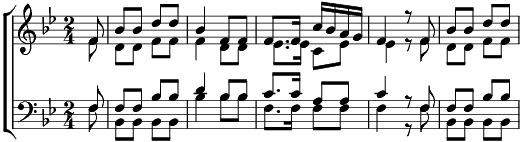

Die launige Forelle
Sib majeur
Musique: Franz Schubert
Arrangement: Franz Schöggl

F. Schubert : Die Forelle
In einem Bächlein helle, da schoss in froher Eil
Die launische Forelle vorüber wie ein Pfeil
Ich stand an dem Gestade und sah in süsser Ruh
Des muntern Fischleins Bade im klaren Bächlein zu,
Des muntern Fischleins Bade im klaren Bächlein zu.
W.-A. Mozart : Eine kleine Nachtforelle
Pa pa pa ….
… muntern Fischleins Bade im klaren Bächlein zu, ja zu,
… muntern Fischleins Bade im Bächlein zu,
Bächlein zu, ja zu
L. van Beethoven : Zur Ehre der Forelle
In einem Bächlein helle, da schoss in froher Eile
Die launische Forelle vorüber wie ein Pfeil
Ich stand an dem Gestade,
Ich stand an dem Gestade in süsser Ruh,
In süsser Ruh und sah
Des muntern Fischleins Bade im klaren Bächlein zu
Im klaren, klaren Bächlein zu